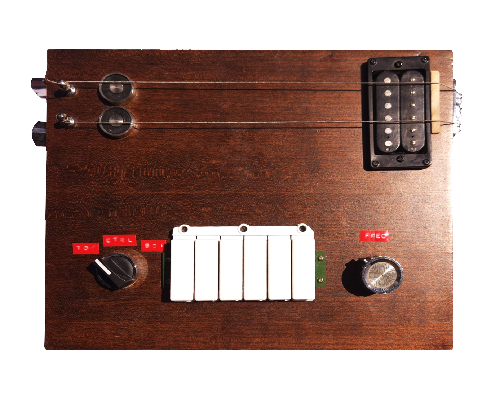

 |
There is a sense of beauty to the harmonic series, present in most tonal timbres, accessed through simple ratios of the oscillation of any resonant body. The idea that through intentional actuation, one could deconstruct the timbre of say, a steel guitar string, into the (ideally) pure tones that come together to make its characteristic sound, became a fascinating one. After seeing a number of NIME projects that made use of electromagnetic resonance, most notably Andrew McPherson’s Magnetic Resonator piano, I knew that magnetically induced vibration was the best path to approach this concept, as well necessitate nontraditional methods of interacting with an object musically. (The ability to induce vibration from complete silence, and modulate the timbre of something in a really kinetic way) The majority of Self-resonating instruments I found in my research make use of a feedback oriented system, where through signal capture and amplification a sound source is excited based off of its current state, often determined by the user. This is the principle of the ‘E-Bow’, a famous guitar tool that creates sustain based on the note currently oscillating beneath it, as well as other surface mounted feedback systems, implementing electromagnets, motors, or piezoelectric transducers in a way that often verges on sculptural.. Projects like Dan Overholt’s ‘Overtone Fiddle’ still take signal from the body of the instrument, but make use of a tactile transducer to introduce the overtones. The signal there is interpreted through DSP on an attached ipod touch, creating a space for experimentation with that feedback using the variety of gestural and tactile controls available on the iPod. The Overtone Fiddle is an excellent example of the creativity available to a performer when they are not limited by feedback alone. This was the approach I wanted to take with my project, experimenting with magnetic induced vibration of steel strings in a way that opens the user up to a full sweep of options to combine and switch between.
In conceptualizing the project, it was important that the actual sound-making body was the most accessible part of the system. To go the route of this digitally augmented guitar-organ, keeping the only active part of the instrument, aside from the operator's hands, exposed provides important feedback to the user. By utilizing a microcontroller with two precision-controlled magnets, a user is able to make meticulous frequency adjustments at their discretion. An array of 6 piano-key style buttons allow for a bank of values to be stored and called upon at-will. This arrangement lets the performer make measured decisions, while still relying on their ear. Giving total control while still maintaining the sense of spontaneity and nuance inherent to resonant systems
The instrument is powered by a Teensy 4.0 microcontroller, chosen because of its high clock speed, which is necessary in generating the waveforms required to excite the string. The main output of the Teensy is in two pairs of digital out pins, set as triggers for a dual H-bridge IC. This component is intended to drive two DC motors bidirectionally, so the digital inputs correlate to which motor is rotating in which direction. Since the electromagnets generate a field based on the direction of the DC, this kind of control works perfectly for alternating the polarity of an electromagnet. The Teensy is set to alternate between the pins of either pair at a set frequency, which in turn switches the polarity of the electromagnets. The electromagnets are simple 1” diameter magnets rated to operate at 5V, chosen because I could run both the microcontroller and the magnets off of the same power supply (which I still am not sure is a good idea).
The Teensy is then connected to a series of knobs and switches to give the user some control over the values. There is a potentiometer, giving a linear control over the frequency values, and a three way switch, determining the behavior of the potentiometer. The switch allows the user to pick which magnet they are controlling with the knob. The rotary switch was chosen because of a desire to keep the interface as simplistic as possible. As a plus, allowing a single knob to behave in a number of ways allows for better scaling if I wanted to expand the number of strings, or implement some other functionality down the line and still be able to interface with the keys. The keys, salvaged from a plastic toy ‘guitar’ found at the thrift store. The keys allow the performer to save six distinct frequency values for either magnet. These values are saved by holding the key down for a set duration (2 sec), this can be done one magnet at a time, or together, by manipulating the rotary switch. When a key is pressed, both magnets will adjust to that saved value. This allows the user to populate a keyboard with 6 distinct organ-like drones to play like a piano. Since the primary sound-source of the device is an electric guitar string, it is necessary that the strings be securely fastened, and that there is an electromagnetic pickup, with an output jack.